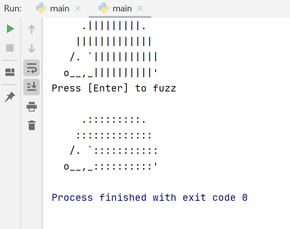

In this task, you'll write code to draw a fuzzy hedgehog! It should look like this:
Instructions:
input() command).The output will look like this
The top hedgehog is made up of the following characters (symbols).
Feel free to copy and paste them into your code.
.|||||||||.
|||||||||||||
/. `|||||||||||
o__,_||||||||||'
You will need to get your teacher to check your output before moving on